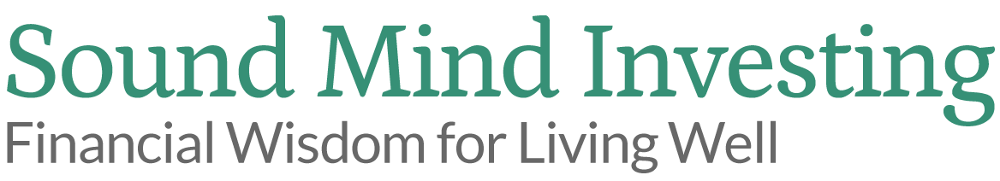

Sound Mind Investing / Brand resourcesFinancial wisdom.
Financial wisdom.
A consistent identity.
A practical reference for presenting Sound Mind Investing with clarity, confidence, and care.
Working brand guide · October 2026
Colors and font family reflect the current website. Usage rules and size recommendations are proposed standards.
01 / IDENTITY
The logo library
Use the supplied artwork. Left-aligned versions support left-aligned layouts; centered versions belong in centered compositions. White logos always appear on a dark background.


PNG files: 1168 × 212 pixels with transparent backgrounds. Black PNGs are monochrome derivatives of the supplied white artwork. Illustrator masters were last modified November 27, 2024; file dates do not establish approval status.
Protect the artwork
Keep the original proportions, lettering, and tagline. Do not stretch, add shadows, outline, or rebuild the logo with typed text.
Give it room
Recommended clear space: at least the height of the capital “S” on every side. Keep surrounding copy and edges outside that area.
Keep it readable
Start at 240 pixels wide for digital use, then check the tagline at actual size. If it cannot be read, enlarge the logo or use an approved alternate.
02 / PALETTE
Grounded in green
Let white and light neutral surfaces carry the layout. Use green for emphasis and slate for contrast. Select a swatch to copy its color code.
Website colors observed October 27, 2026. Use the pairings below to keep text readable; brand green is not a universal small-text color. Use promotional red sparingly for priority actions; blue identifies content links outside the homepage.
Which color goes where?
These recommended roles keep everyday materials consistent. Use mostly light surfaces and dark text, with green for recognition and emphasis.
| Color | When to use it | Pairing and limits |
|---|---|---|
SMI green#369076 | Use for the brand header, prominent accents, icons, and large display text. Keep it the main identifying color. | Use white logos on green. For small button labels, use a darker background such as slate with white text. Avoid small green text on white. |
Soft green#579E8C | Use for secondary accents, decorative rules, supporting graphics, and non-text highlights. | Keep it subordinate to SMI green. Avoid white body text on this lighter green, and do not use it for essential small text on white. |
Slate#3D4B52 | Use for navigation, footer panels, dark feature sections, and high-contrast action buttons. | Pair with white text and the white logo. Avoid black or dark gray text on slate. |
Heading ink#111827 | Use for page titles, section headings, key figures, and important labels. | Pair with white or light neutral backgrounds. Keep headings primarily this color; use green as an accent. |
Body gray#374151 | Use for paragraphs, descriptions, lists, and supporting labels. | Pair with white or light neutral backgrounds. Use this instead of pale gray for essential reading content. |
White#FFFFFF | Use for primary reading surfaces, logo space, and breathing room between sections. | Pair with heading ink or body gray for text. Use the green or black logo on white; use the white logo only on a dark or sufficiently contrasting background. |
Promotional red#B91C1C | Use sparingly for a priority promotional action, signup, or campaign call to action. | Pair with white text. Reserve for one high-priority action in a section; do not use for ordinary article links or large background areas. |
Article link blue#0A78CC | Use for article and general content links outside the homepage. | Keep links underlined in body copy. On hover, shift subtly to brighter blue (#3388FF). Keep the same font weight and thin underline; do not add bold or thicken the underline. Retain a visible keyboard focus treatment. Homepage content links follow the black-to-green rule below. |
Everyday content
White background + ink heading + gray body text.
Dark panels & buttons
Slate background + white text + white logo.
Brand moments
Green background + white logo. Keep extended reading on light surfaces.
Accessibility: white on SMI green is approximately 3.9:1, suitable for large text but below 4.5:1 for normal-size text. White on soft green is approximately 3.2:1. White on slate is approximately 9:1. Do not use color alone to communicate status or meaning.
Link colors by location
Homepage content links
Black by default. On hover or keyboard focus, change to SMI green and add an underline. Use this treatment consistently for homepage content links.
Articles & other content pages
Use article blue for standard content links elsewhere. On hover, shift to a slightly brighter blue (#3388FF), keeping the same font weight and thin underline. Do not add bold on hover. Underline links within paragraphs so they remain recognizable without relying on color alone.
Promotional action / Use sparingly
Use red to draw attention to a deliberate priority action. Keep ordinary links blue and let green remain the primary brand color.
Red #B91C1C was sampled from the MoneyGuide transition page’s action button. Blue #0A78CC was sampled from a link within an SMI article. Homepage behavior follows the supplied brand direction. Navigation, logo links, and styled buttons retain their own contextual treatments.
03 / TYPOGRAPHY
Clear at every size
Roboto is the primary font for navigation, headings, and body copy. Playfair Display is the secondary editorial font for pull quotes and block quotations. Preserve the logo’s lettering within the original artwork.
Roboto / Regular + Bold
Invest with Purpose.
Live with Peace.
Aa Bb Cc Dd Ee Ff
0123456789
This package uses Roboto when available, with Arial as a fallback. No external font request is required.
Roboto is available free from Google Fonts. Open the official family page to download the fonts or get the website embed code. Use Regular (400) for body copy and Bold (700) for headings.
Recommended digital scale
Page title36–48 px / Bold
Section heading28–32 px / Bold
Body copy18 px / Regular
Labels & captions14–16 px / Regular
Use line spacing around 1.5–1.7 for body text. Keep reading columns comfortable and paragraphs short. Use bold headings on their own line without a colon.
These are recommended content sizes. Display headlines can be larger, as demonstrated at the top of this guide.
TYPOGRAPHY / EDITORIAL ACCENT
Playfair Display for quotations
“Invest with Purpose. Live with Peace.”
Typography demonstration using the homepage message.
Use it selectively
Use Playfair Display for pull quotes and editorial block quotations. Keep navigation, headings, body paragraphs, and source attributions in Roboto.
Quote text20 px / Medium (500)
Line spacing28 px / 1.4
Quote color#373B40
StyleUpright, not italic
Get Playfair Display on Google Fonts ↗
Measured from Don’t Press the Panic Button and Other Points to Ponder. That article’s attribution is Roboto italic. This standalone guide uses Georgia as the quotation fallback when Playfair Display is not installed; load or install Playfair Display for an exact match.
04 / VOICE
Wisdom with reassurance
Sound like a knowledgeable teacher: practical, steady, approachable, and grounded in Christian stewardship.
Write with purpose
- Explain financial terms in everyday language.
- Offer a clear, manageable next step.
- Connect investing with family, generosity, and stewardship.
- Use measured claims and precise descriptions.
- Encourage thoughtful action without fear or exaggerated promises.
Put it into practice
Example copy / Proposed
Build a plan you understand. Follow a clear investing approach, make thoughtful decisions, and keep your long-term goals in view.
“Invest with Purpose. Live with Peace.” is current homepage messaging. “Financial Wisdom for Living Well” is the tagline in the supplied logo.
05 / APPLICATIONS
Alignment with intention
Match the logo to the composition. Center the centered artwork, and give white artwork a dark, uncluttered surface.
Make room for clarity.
Centered logo, headline, and supporting text create a balanced cover or introductory section.
Centered application / Green on white
Confidence starts here.
A white logo on a dark slate background provides clear contrast for covers, banners, and closing panels.
White-on-dark application / Centered
Use authentic imagery
Prefer real SMI people and settings for trust. Use simple illustrations to explain ideas and restrained charts to present evidence.
Keep layouts calm
Use generous white space, consistent margins, clear headings, and one prominent action per section.
Check the context
Preview on mobile and at actual size. Keep the logo clear of busy photos and preserve sufficient contrast.